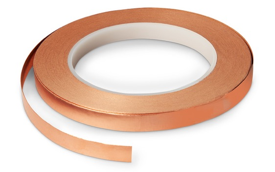

Het process
We begonnen met expirimenteren, op teensy en met simpele materialen als potlood en aluminum folie.
De tests waren uitgevoerd op een Teensy 3.2 met de FastTouch library.
Test 1: Potlood Slider
Een slider maken met potlood werkte verassend goed, verschillende diktes in potlood op het papier zorgt voor verschillende capaciteit waarden.
De betrouwbaarheid van de waarden hangt af van het soort potlood dat je gebruikt en je teken vaardigheden.
Test 2: Aluminum Folie
Aluminum folie is ook een zeer toegankelijk, geleidend materiaal. Een groot stuk aluminum is ook bijzonder goed in het meten van afstand tussen folie en je hand.
Test 3: Bare Conductive Verf

We hebben ook de Bare Conductive Electric Paint geprobeert en het werkte zeer goed als geleider. Het nadeel hiervan is dat je geen analoge waarden kan krijgen, alleen AAN en UIT.
Het werkt dus eigenlijk te goed.
Test 4: Koper Tape

Koper tape is even geleidend als de Bare Conductive Verf, je kan gemakkelijk een lange lijn van koper maken en dit verbinden met onderdelen.
Waar het koper tape nog het meest handig voor is gebleken is om verschillende onderdelen aan elkaar vast te maken zonder te hoeven solderen, bijvoorbeeld het verbinden van een draad aan alluminum folie.